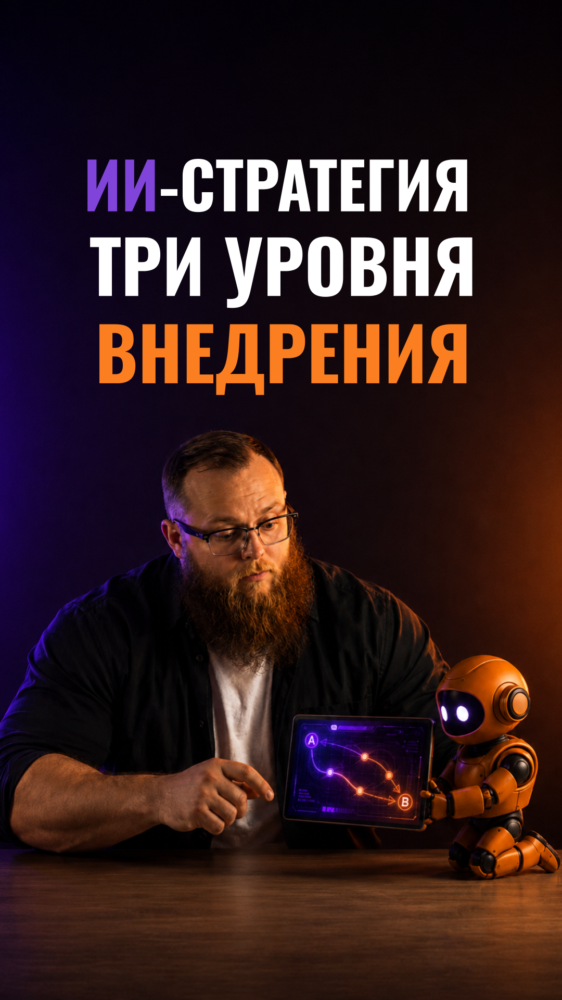

Стратегия — с бизнеса
Не с выбора модели
Не со списка инструментов
Сильные стороны
Слабые стороны
Возможности
Ограничения
SWOT про готовность, а не про рынок
Сильные стороны
Данные
Техническая база
Экспертиза команд
Поддержка руководства
С чего начать уже в этом месяце
Слабые стороны
Разрозненная инфра
Разные источники
Нет владельцев
Где остановится масштабирование
Возможности
Цикл решений короче
Клиентский опыт
Быстрее продукты
Какой показатель меняем первым
Ограничения
Регуляторика
Этика
Инерция организации
Что согласовать до старта
Сначала — разрывы
Диагностика зрелости
Слабые блоки
План начинается с них
Быстрые победы
Масштабирование
Фундамент
Очередь процессов, а не список идей
Быстрые победы
Поддержка
Документы
Отчёты
Эффект за недели, а не за годы
Фундамент
Данные
Платформа
Владельцы процессов
Без него масштабирования не будет
Ключевые
Своё
Поддерживающие
Готовое
Управленческие
Человек в центре
Уникальное строим, остальное берём
Точечные решения
Ассистенты
Конкретные задачи
Быстрый старт
Уровень 1
Вертикальные агенты
Целые функции
Процессы меняются
Свои метрики
Уровень 2
ИИ-процессы
Агенты общаются
Решения без пауз
Корпоративный интеллект
Уровень 3
Точечные
Вертикальные
ИИ-процессы
От ассистента к интеллекту
